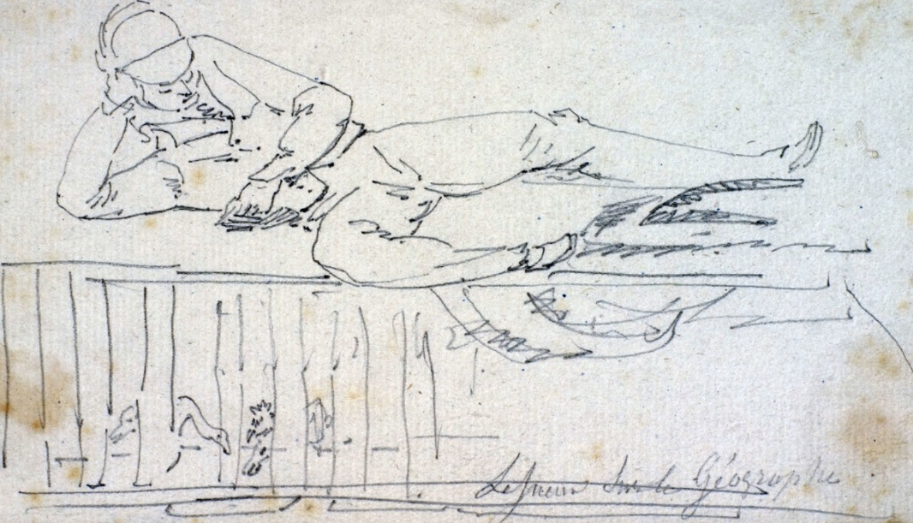
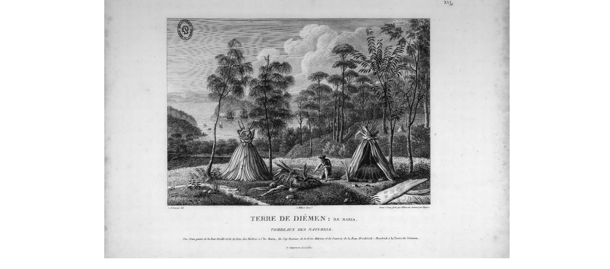
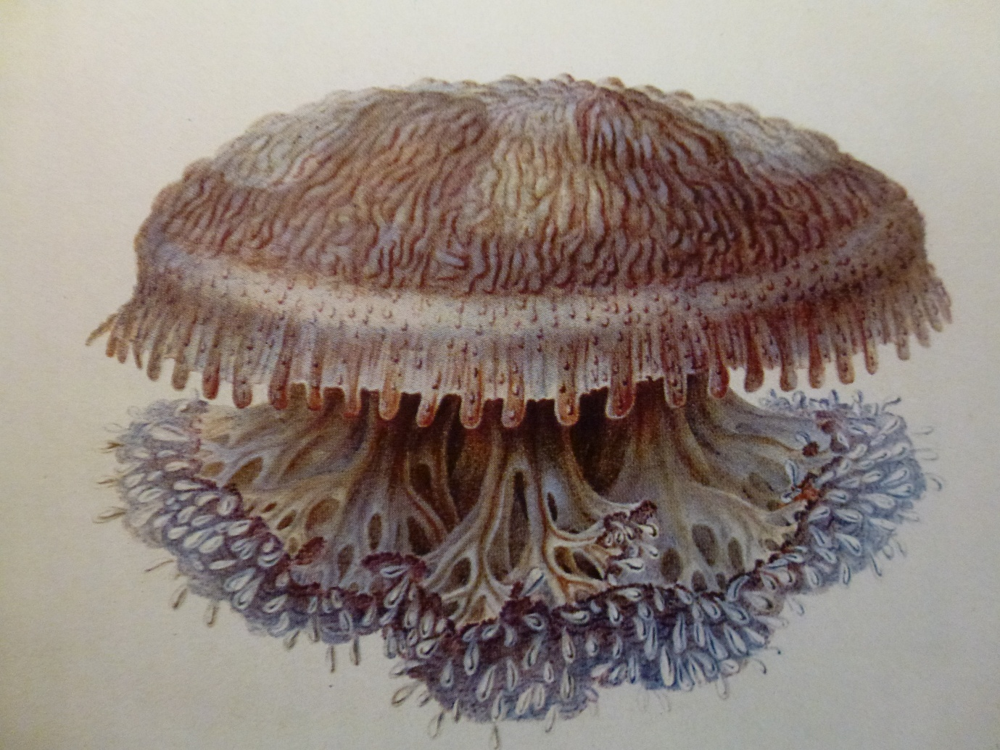

Source : Muséum d’Histoire Naturelle du Havre.
https://www.museum-lehavre.fr/collections/la-vie-bord

Dessins de C.-A. Lesueur et N. Petit ; gravures de Cloquet, Fortier, B. Roger et autres ; texte de François Péron et Louis de Freycinet. Source : Bibliothèque nationale de France.
http://catalogue.bnf.fr/ark:/12148/cb38495530j
https://gallica.bnf.fr/ark:/12148/btv1b2300134q/f16.item.zoom


Pointe Le Sueur – Point Lesueur
Îles Lesueur – Lesueur Island
Cap Lesueur – Cape Lesueur
Charles-Alexandre Lesueur à bord du Géographe , par Lesueur. Il est représenté en train de lire, installé sur la caisse du poulailler.
Source : Muséum d’Histoire Naturelle du Havre.
https://www.museum-lehavre.fr/collections/la-vie-bord
Terre de Diémen : île Maria. Tombeaux des Naturels. Dans Voyage de découvertes aux Terres australes exécuté sur les corvettes le Géographe, le Naturaliste et la goë lette le Casuarina pendant les années 1800, 1801, 1802, 1803 et 1804, tome 1, planche XVI, 1816.
Dessins de C.-A. Lesueur et N. Petit ; gravures de Cloquet, Fortier, B. Roger et autres ; texte de François Péron et Louis de Freycinet. Source : Bibliothèque nationale de France.
http://catalogue.bnf.fr/ark:/12148/cb38495530j
https://gallica.bnf.fr/ark:/12148/btv1b2300134q/f16.item.zoom
Abri autochtone sur la presqu’île Péron, Shark Bay, alors dé signée comme la « presqu’île du Milieu, baie des Chiens-Marins ». Les arbustes figuré s au premier plan portent des feuilles comparables à celles du myrte. Charles-Alexandre Lesueur. Encre, lavis et crayon sur papier, 20 × 30 cm. Muséum d’Histoire Naturelle du Havre, inv. 16 027.
Cassiopé e dieuphile, Terre de Witt. Dans François Péron, Histoire générale des méduses , planche 24, illustrée par Charles-Alexandre Lesueur. Aquarelle, lavis et crayon sur vélin. Musé um d’Histoire Naturelle du Havre, inv. 70 049.
En embarquant Charles-Alexandre Lesueur et Nicolas-Martin Petit à bord du Géographe comme canonniers auxiliaires, Baudin avait toutefois pleinement conscience de leurs talents de dessinateurs. La décision du commandant prit toute sa valeur lorsque les artistes officiels de l’expédition quittèrent le voyage lors de l ’escale de l’Isle de France, avant même que la mission n’ait commencé son travail d’exploration en Terres australes.
Lesueur et Petit furent alors appelés à assumer des fonctions artistiques essentielles. Leurs aptitudes se répartirent progressivement selon les besoins de l’expé dition : Petit se consacra surtout aux portraits et aux figures humaines, tandis que Lesueur s’attacha davantage à la représentation des paysages, des habitats, des objets et, surtout, des spécimens naturels recueillis par François P éron.
Cette répartition donna naissance à une collaboration particulièrement étroite entre Péron et Lesueur. Elle fut à la fois scientifique, artistique et amicale. Lesueur ne se limita pas à illustrer les observations de Pé ron : ses dessins contribuèrent directement à leur précision, à leur lisibilité et à leur transmission. Péron, qui n’était lui-même que peu exercé à l’ art du dessin, trouva en Lesueur un collaborateur indispensable. Leur proximité apparaît jusque dans leur correspondance, où Péron s’adressait affectueusement à lui sous la formule « mon cher papa Lesueur », bien que Lesueur f ût de trois ans son cadet.
Dans le rapport présenté au gouvernement le 9 juin 1806 par une commission de l’Institut, Georges Cuvier souligna l’importance exceptionnelle des collections déposées au Muséum par Pé ron et Lesueur. Celles-ci comprenaient, selon lui, « plus de cent mille échantillons d’animaux », parmi lesquels figuraient plusieurs genres nouveaux, et plus de 2 500 espèces nouvelles. Cuvier ajoutait que Péron et Lesueur avaient, « à eux seuls, fait connaître plus d’animaux que tous les naturalistes voyageurs de ces derniers temps ». Il résumait leur méthode par une formule célèbre : « Les deux amis mettoient leurs travaux en commun : l’ un dessinoit ce que l’autre décrivoit. »
Cette complémentarité explique la richesse documentaire des œuvres de Lesueur. Ses dessins ne se contentent pas de reproduire un motif isolé ; ils replacent les êtres, les objets ou les constructions dans leur milieu. Cuvier le notait dé jà à propos des habitants des Terres australes, en indiquant que Lesueur pouvait fournir, par ses dessins, « les renseignements les plus exacts sur leur manière de vivre et sur leur habitation ».
La planche des tombeaux de l’île Maria en offre un exemple remarquable. Lesueur y reprend et achève un dessin commencé par Petit, à partir d’un site découvert par Leschenault et Péron à proximité de la pointe Lesueur. L’image ne montre pas seulement les tombeaux : elle les inscrit dans leur paysage, au sommet d’un morne dominant la baie. Les écorces gravées qui les constituent, la disposition du monument, les traces d’ un feu ancien et la situation topographique du lieu sont rendues avec une attention minutieuse. L’illustration prolonge ainsi le texte de Péron, qui avait donné de ces tombeaux une longue description détaillée et commentée.
Un même principe se retrouve dans le dessin de l’abri autochtone observé sur la presqu’île Péron, dans la baie des Chiens-Marins. Péron décrit des huttes établies sur un sol sablonneux, préalablement débarrassé de végétation, formées de rameaux plantés dans le sable, courbés, entrelacés et recouverts de feuillages, d’herbes sèches et de sable. Lesueur traduit cette description en image, mais il y ajoute une pré cision documentaire propre au dessin naturaliste : les arbustes placés au premier plan permettent d’identifier les matériaux utilisés pour la construction de l’abri. Il représente également deux petits marsupiaux, peut-ê tre des wallabies de l’espèce tammar, qui replacent la scène dans son environnement vivant.
Le rôle de Lesueur fut tout aussi essentiel dans les recherches de Péron sur les méduses et les « zoophytes ». Ces animaux gélatineux, translucides et extrêmement fragiles se conservaient difficilement aprè s leur capture. Leur observation devait donc être immédiate, avant que leurs formes, leurs couleurs et leur transparence ne s’altèrent. Lesueur fixa par le dessin ce que les spécimens eux-mê mes ne pouvaient durablement conserver : la disposition des tentacules, les nuances colorées, l’organisation interne visible à travers la matière vivante et l’apparence générale d’animaux presque impossibles à pré server.
Cette collaboration donna lieu à un ensemble remarquable de vélins, étroitement associés aux descriptions de Péron. Le manuscrit de Péron sur les méduses, illustré par Lesueur, ne fut publié qu’ en 1995 par Jacqueline Goy sous le titre Les méduses de François Péron et Charles Lesueur. Un nouveau regard sur l’expédition Baudin. Les travaux de Goy, ainsi que ceux de Danièle Vial sur les méduses sur vélin de Lesueur, ont montré la valeur à la fois scientifique, taxinomique et esthétique de ces images. Lesueur y donne une forme durable à des organismes fugitifs, dont la matière même résistait à la conservation.
La Cassiopée dieuphile, recueillie dans les parages de la Terre de Witt, près des îles Lesueur, en offre un exemple particulièrement évocateur. Dans cette image, Lesueur ne se contente pas de représenter une méduse comme un objet de curiosité . Il en restitue les caractères distinctifs, la structure, la transparence et la délicatesse chromatique avec une exactitude qui relève autant de l’observation scientifique que d’une remarquable sensibilité esthé tique. Le dessin devient ainsi un instrument de connaissance : il relie le spécimen collecté, la description de Péron et la mémoire visuelle de l’expédition.
Les quatre toponymes dédiés à Lesueur — un piton, une pointe, des îles et un cap — témoignent donc moins d’un simple hommage personnel que de la place essentielle qu’ il occupa dans la production scientifique et visuelle du voyage. Par ses dessins, Lesueur contribua à transformer l’observation de terrain en documents durables, capables de décrire à la fois les cô tes, les abris que leurs habitants construisaient pour les vivants et pour les morts, ainsi que les formes les plus éphémères du monde vivant.